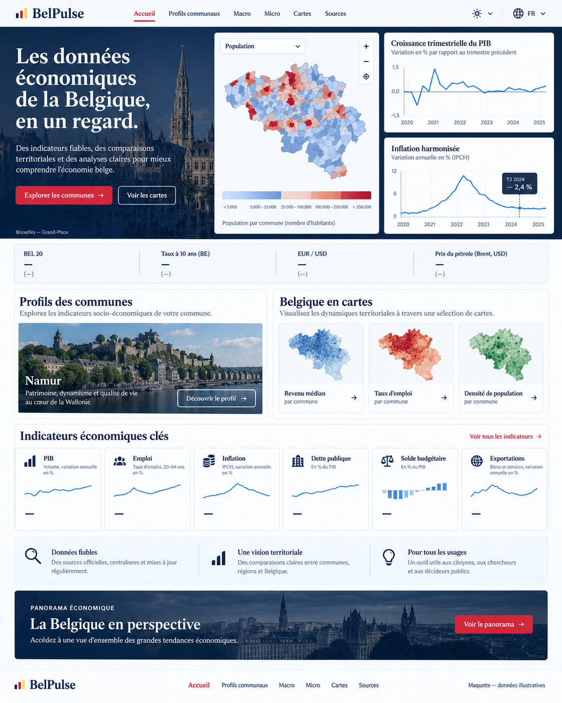
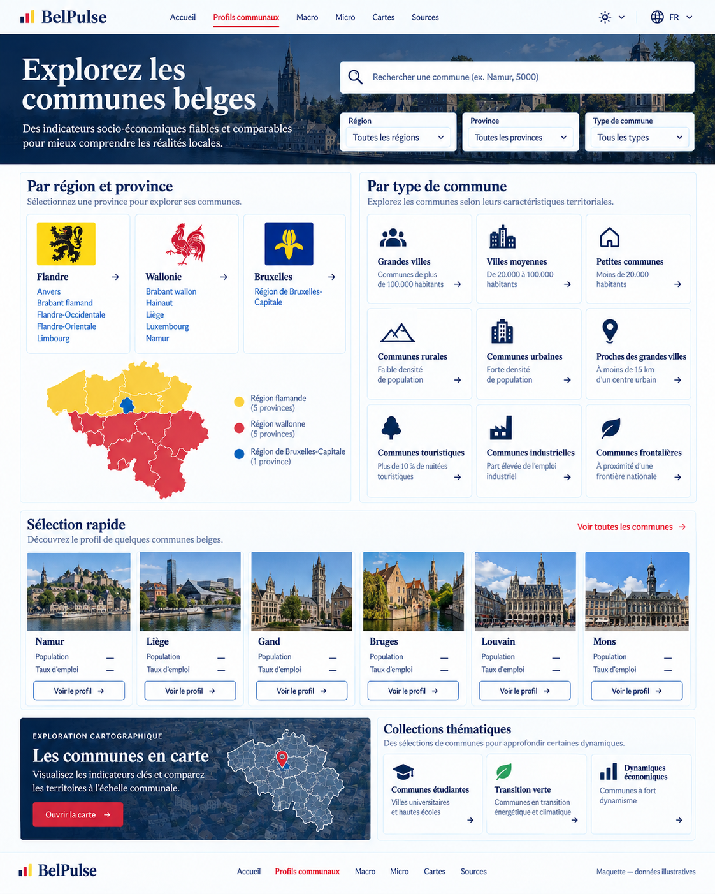
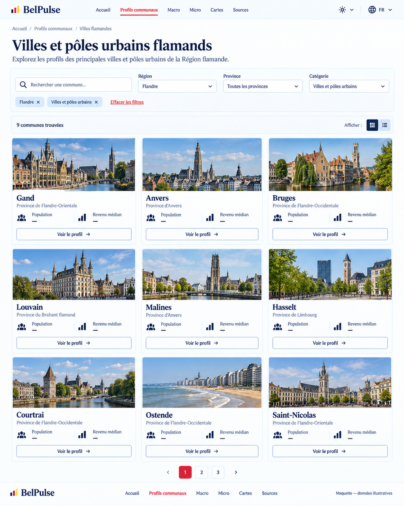
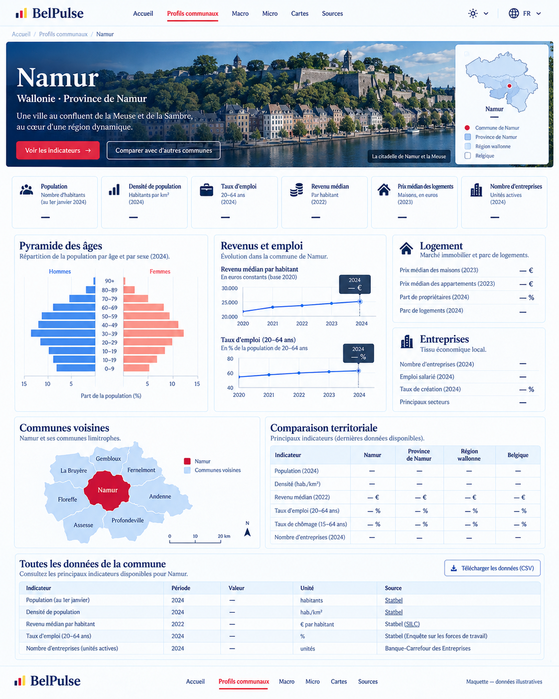
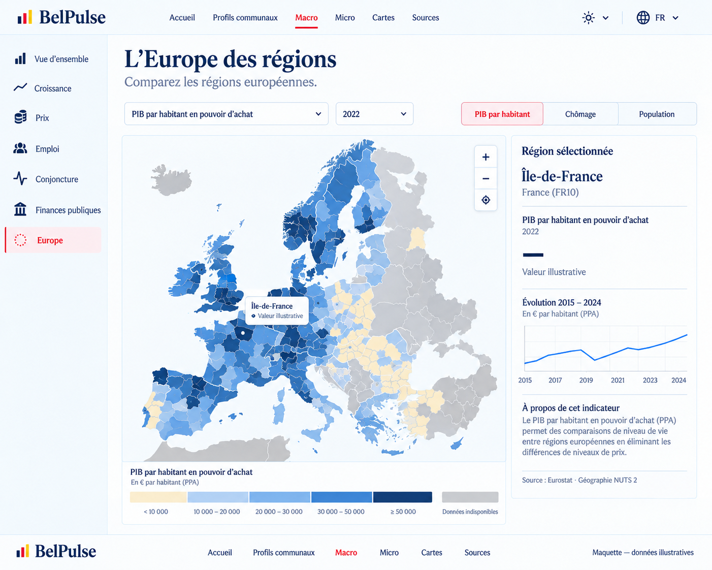
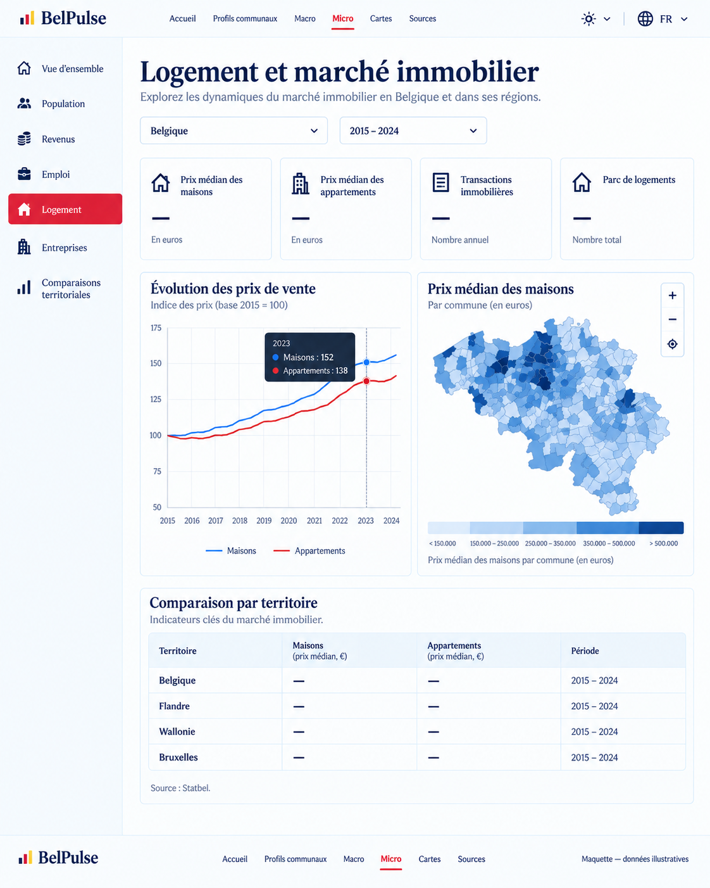
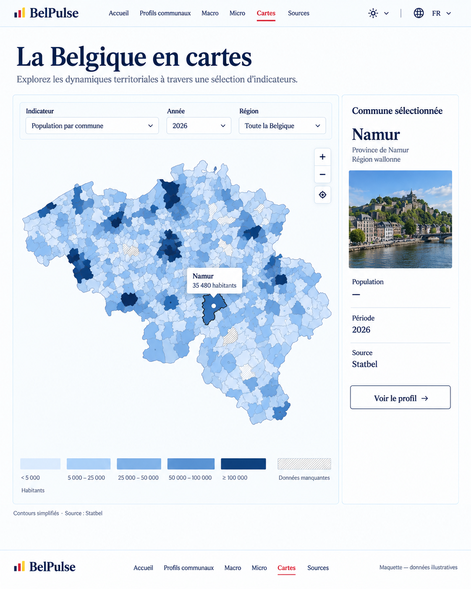
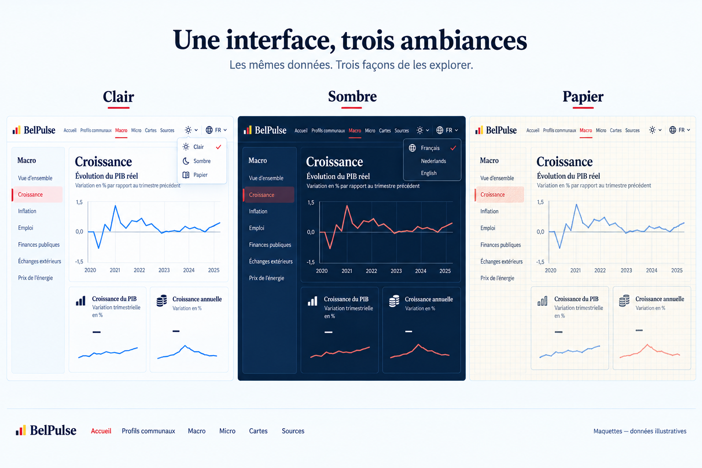

01 · Accueil

Huit pages et une comparaison des trois thèmes. Cliquez sur une image pour l’ouvrir à sa taille originale.
Références de composition générées par IA. Les chiffres, courbes, contours, photos, catégories et mentions de sources sont illustratifs, non validés. Pour l’implémentation, conserver les données, définitions et géographies officielles du pipeline.







